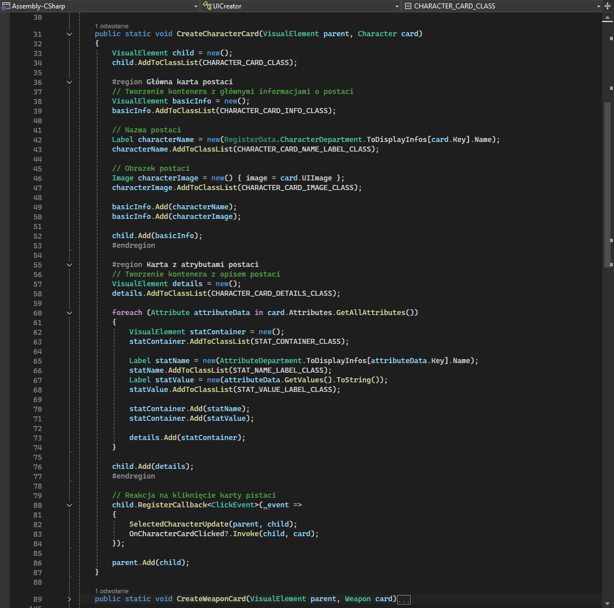

Niedzielne Dev-logi
Lepsze UI
Przynajmniej chciałbym aby było można je nazwać lepszym. Wybór postaci to też doświadczenie gry, dlatego chciałem zrobić coś co będzie wyglądało miło dla oka. Tak właśnie powtało nowe UI dla wyporu postaci.
